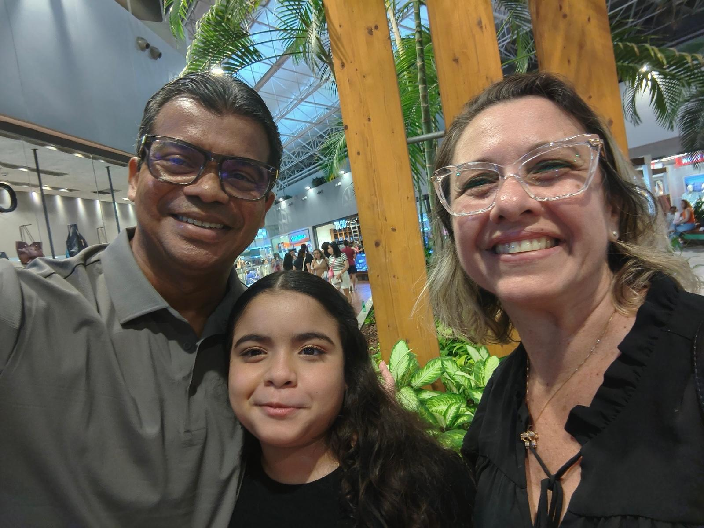
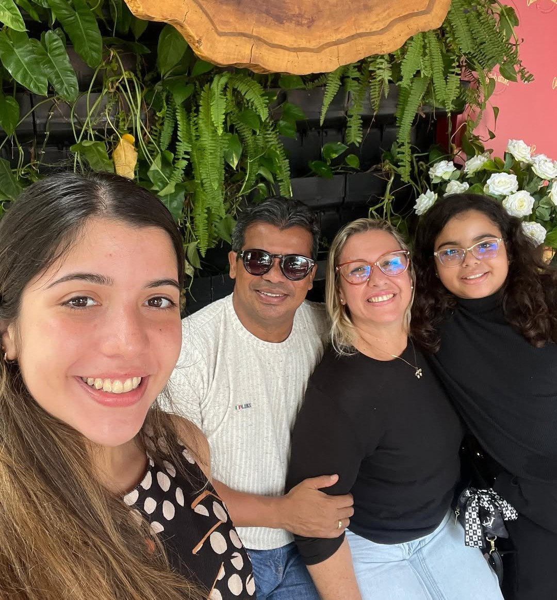

Uma vida dedicada a ensinar a Palavra com profundidade
Conheça a trajetória, o chamado e a metodologia por trás do Método Kairós®, fruto de décadas de estudo, ensino e paixão pelas Escrituras.
Pastor Bartolomeu
Pastor | Professor de Bíblia | Mentor e Palestrante.
Rober Bartolomeu é pastor, Teólogo, Filósofo, professor de Bíblia e mentor. Dedicado à formação de líderes cristãos que desejam desenvolver um conhecimento sólido das Escrituras e uma fé prática para o dia a dia.
É Fundador do curso Intensivo da Bíblia, um programa de formação desenvolvimento para conduzir o aluno a uma compreensão clara, profunda, organizada e prática da Palavra de Deus.
Casado a 22 anos com Daniella Feitosa, pai de meninas. Pastor a 20 anos
Pastor BartolomeuMarcos de uma jornada de fé
[O chamado inicial]
[Descreva brevemente o momento em que sentiu o chamado para o ministério.]
[Formação teológica]
[Fale sobre onde estudou teologia e o que essa formação representou.]
[Início do pastorado]
[Conte sobre a primeira igreja ou comunidade que passou a liderar.]
[Criação do Método Kairós®]
[Explique como surgiu a ideia do método e o que o tornou único.]
[O presente ministério]
[Descreva o que o Pastor Bartolomeu faz atualmente e sua visão para o futuro.]
[Insira aqui uma frase marcante do Pastor Bartolomeu sobre o propósito de estudar a Bíblia com profundidade — algo que resuma sua filosofia de ensino.]
Onde o Pastor Bartolomeu atua
Nome da Igreja
Pastor da Comunidade das Nações Fortaleza.
Pregações
Minhas pregações busca expandir a cultura do Reino de Deus através do desenvolvimento pessoal e da maturidade espiritual.
Professor do Método Kairós®
O curso busca aprofundar seu conhecimento da palavra, fortalecer sua Fé.
Momentos do ministério



Aprenda diretamente com o Pastor Bartolomeu
Inscreva-se no Curso Intensivo da Bíblia e tenha acesso ao método completo, com a mesma profundidade que você conheceu aqui.
Conhecer os planos